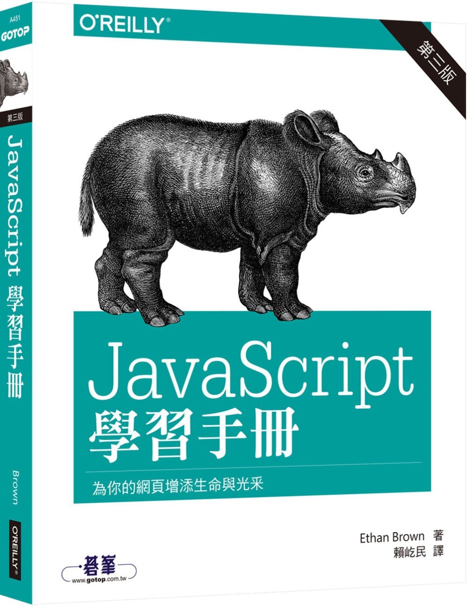

資料庫期末專案報告
0. 簡介
0.1 組員名單
陳耀銘
賴韋豪
江彥融
林佩瑜
0.2 使用工具
 Visual Studio Code
Visual Studio Code


0.2 使用技術(前端)


0.3 使用技術(後端)
0.4 使用技術(爬蟲)

Packages: requests, BeautifulSoup
0.5 參考書籍
1. 建立

Repository
tommy1994111/db-project-car Visual Studio Code
Packages: requests, BeautifulSoup
Repository
tommy1994111/db-project-car